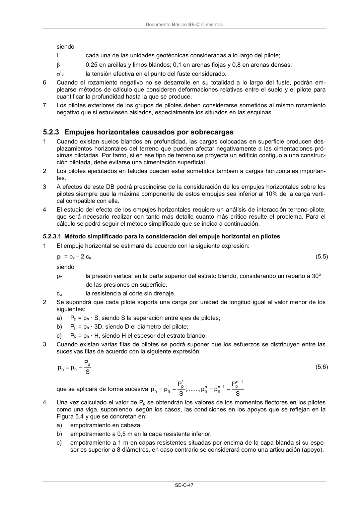

DB-SE-C · 5.2.3 Empujes horizontales causados por sobrecargas · versión 2019-12-20 · capa oficial
Formatos: JSON compacto · Markdown · PDF fuente
Ámbito del documento · texto del ámbito · documento y tablas
ID técnico a0115 · PDF pág. 52 · jerarquía no validada por persona · contrastado con el literal de la página 52 (candidato tipográfico); no validado por persona · padre: raíz
5.2.3 Empujes horizontales causados por sobrecargas 1 Cuando existan suelos blandos en profundidad, las cargas colocadas en superficie producen des- plazamientos horizontales del terreno que pueden afectar negativamente a las cimentaciones pró- ximas pilotadas. Por tanto, si en ese tipo de terreno se proyecta un edificio contiguo a una construc- ción pilotada, debe evitarse una cimentación superficial. 2 Los pilotes ejecutados en taludes pueden estar sometidos también a cargas horizontales importan- tes. 3 A efectos de este DB podrá prescindirse de la consideración de los empujes horizontales sobre los pilotes siempre que la máxima componente de estos empujes sea inferior al 10% de la carga verti- cal compatible con ella. 4 El estudio del efecto de los empujes horizontales requiere un análisis de interacción terreno-pilote, que será necesario realizar con tanto más detalle cuanto más crítico resulte el problema. Para el cálculo se podrá seguir el método simplificado que se indica a continuación.

PDF fuente redistribuible: copia fiel enlazada en esta página (SHA256 verificado).